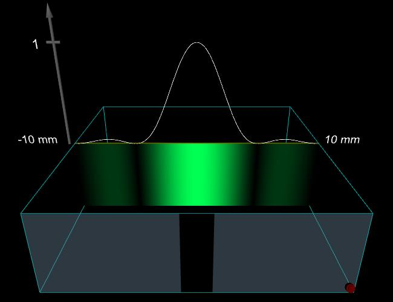

Definitions
Wavelength = wavelength in vacuum
N = number of slits
w = slit width
d = center - to - center distance between consecutive slits
z = distance from the aperture plane to the observation plane
Image 1: Single Slit, Violet Light
N = 1, w = 0.100 mm, Wavelength = 400 nm, and z = 1000 mm.
To download the high resolution image, copy the following link into your
Image 2: Single Slit, Green Light
N = 1, w = 0.100 mm, Wavelength = 500 nm, and z = 1000 mm.
To download the high resolution image, copy the following link into your
Image 3: Single Slit, Red Light
N = 1, w = 0.100 mm, Wavelength = 700 nm, and z = 1000 mm.
To download the high resolution image, copy the following link into your
Image 4: Single Slit, Increased Width
N = 1, w = 0.200 mm, Wavelength = 700 nm, and z = 1000 mm.
To download the high resolution image, copy the following link into your
Image 5: Double Slit, Very Small Slit Width
N = 2, w = 0.005 mm, d = 0.100 mm, Wavelength = 500 nm, and z = 1000 mm.
To download the high resolution image, copy the following link into your
Image 6: Double Slit, Very Small Slit Width, Increased Spacing
N = 2, w = 0.005 mm, d = 0.500 mm, Wavelength = 500 nm, and z = 1000 mm.
To download the high resolution image, copy the following link into your
Image 7: Double Slit, Increased Slit Width
N = 2, w = 0.050 mm, d = 0.500 mm, Wavelength = 500 nm, and z = 1000 mm.
To download the high resolution image, copy the following link into your
Image 8: Double Slit, Increased Slit Width
N = 2, w = 0.100 mm, d = 0.500 mm, Wavelength = 500 nm, and z = 1000 mm.
To download the high resolution image, copy the following link into your

Image 9: Single Slit
N = 1, w = 0.100 mm, d = 0.500 mm, Wavelength = 500 nm, and z = 1000 mm.
To download the high resolution image, copy the following link into your
Image 10: Three Slits, Very Small Slit Width
N = 3, w = 0.005 mm, d = 0.100 mm, Wavelength = 500 nm, and z = 1000 mm. Except for N, these
are the same parameter values that were used in Image 5.
To download the high resolution image, copy the following link into your
Image 11: Four Slits, Very Small Slit Width
N = 4, w = 0.005 mm, d = 0.100 mm, Wavelength = 500 nm, and z = 1000 mm.
To download the high resolution image, copy the following link into your
Image 12: Ten Slits, Very Small Slit Width
N = 10, w = 0.005 mm, d = 0.100 mm, Wavelength = 500 nm, and z = 1000 mm.
To download the high resolution image, copy the following link into your
Image 13: Ten Slits, Larger Slit Width
N = 10, w = 0.040 mm, d = 0.100 mm, Wavelength = 500 nm, and z = 1000 mm.
To download the high resolution image, copy the following link into your